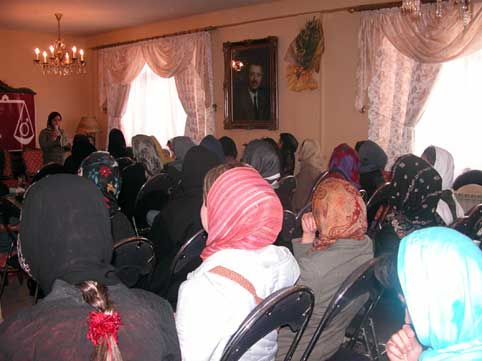
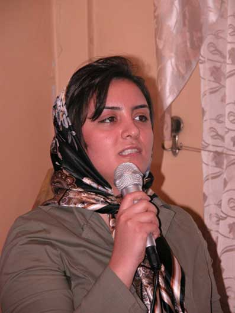
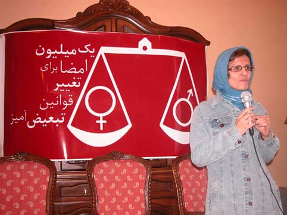
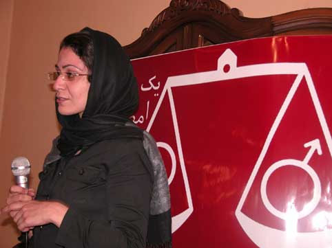
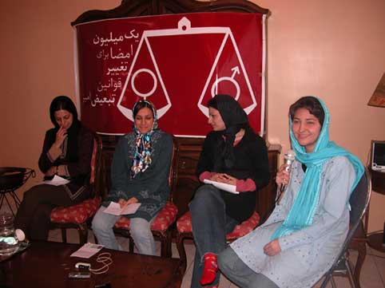
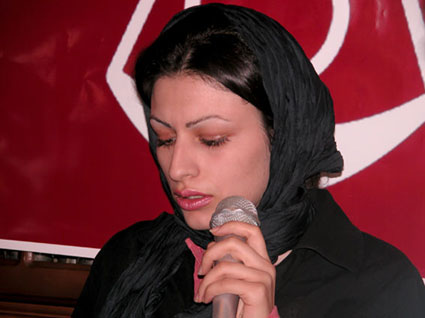
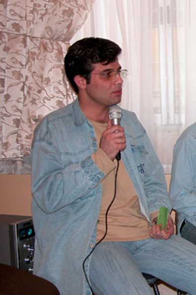
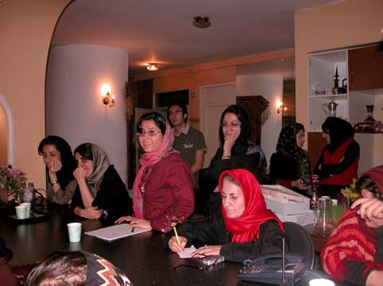

پذيرش > تریبون > گزارش كمپين > کاروان های کمپین در راه اند : گزارشی از نشست عمومی کمپین یک میلیون امضا


 کاروان های کمپین در راه اند : گزارشی از نشست عمومی کمپین یک میلیون امضا کاروان های کمپین در راه اند : گزارشی از نشست عمومی کمپین یک میلیون امضا
25 اسفند 1385 - فاطمه دهدشتی/ عکس: راحله عسگری زاده - نسخه قابل چاپ
نشست عمومی اعضای تهرانی کمپین یک میلیون امضا پنجشنبه 24 اسفند ماه 1385 در حالی برگزار شد که باز هم مثل همه کارگاه ها و نشست های کمپین منزل یکی از داوطلبان کمپین میزبان اعضای آن بود.

بضاعت کم کمپین اجازه نداد تا همه 600 عضو کمپین که حالا در تهران، زنجان، تبریز، سنندج، مشهد، رشت، گرگان، همدان، یزد، کرج، شیراز، کرمانشاه و قم فعالیت می کنند دور هم جمع شود، اما شرکت کنندگان در این نشست تلاش کردند تا برآیندی از مباحث مطرح شده در شش ماهی که از آغاز به کار کمپین می گذرد را مورد توجه قرار دهند.

جزوه های حقوقی به جای کارت پستال عید
الناز ناطقی در ابتدا ضمن ارائه گزارشی از عملکرد 5 ماهه کمپین، به کارگاه هایی که در کنار کارگاه های آموزش حقوقی کمپین برگزار شده است اشاره کرد. وی اضافه کرد که امروز که ما این جا گرد هم آمده ایم کارگاه آموزشی در قم از سوی کمیته آموزش در حال برگزاری است و سپس به شهرهایی که تقاضای برگزاری کارگاه های آموزشی را کرده اند و قرار است برای آن برنامه ریزی لازم صورت بگیرد اشاره کرد. در طول برنامه الناز ناطقی پیشنهاداتی که برای پیشبرد فعالیت کمپین از سوی اعضای کمپین ارائه شده بود مطرح ساخت از جمله برپایی سفره های هفت حق در کنارسفره های هفت سین، دادن جزوه های حقوقی به جای کارت پستال عید و تشکیل کاروان های کمپین در سال آینده.
خسته می شویم اما ناامید نمی شویم
کمپین یک میلیون امضا در حال حاضر یکی از ماندگارترین و مهم ترین حرکت های جنبش زنان است چرا که حرکتی است که در قلب مردم جا باز کرده است و در عین حال، با روش مسالمت آمیز و غیر متمرکزش برخی از مسئولان را گیج کرده است.»
«نوشین احمدی خراسانی»، نویسنده و از اعضای کمپین یک میلیون امضاء که سخنان خود را اینگونه آغاز کرده بود، ادامه داد:«كمپيني كه بعد از تجمع 22 خرداد 85، به دنبال اعتراض فعالان زن به قوانين تبعيضآميز در پنج شهريور ماه با 54 نفر عضو اوليه كارش را آغاز كرد، اكنون پس از شش ماه نزدیک به600 عضو دارد و اعضای آن در سراسر کشور به طور داوطلبانه مشغول ارائة آموزشهاي حقوقي و چهرهبهچهره به هموطنان و جمعآوري امضا براي كمپين هستند.»

او با بیان اینکه خود من در طول 13 سال فعالیت هایی که در حوزه ی مسایل زنان انجام داده ام هیچگاه فکر نمی کردم که بحث ها و مطالباتی که مطرح می کنیم به عادلانه تر شدن زندگی خودمان هم بیانجامد بلکه بیشتر به آینده های دور امید بسته بودم یعنی به نسل های آینده، که زندگی زنان در آینده عادلانه تر باشد اما بعد از آغاز به کار کمپین یک میلیون امضاء واقعا امید بیشتری ییدا کرده ام که این تلاش های امروز ما می تواند برای زندگی خود ما هم مثمره ثمر باشد. نوشین احمدی خراسانی افزود: « حالا با گذشت 6 ماه از فعالیت کمپین فکر می کنم کمپین یک میلیون امضاء آنقدر موفقیت و برکت داشته است که اکنون می توانیم امیدوار باشیم که من و زنان نسل من نیز بتوانند از دست آوردهای این کمپین بهره ببریم و زندگی عادلانه تری را در حیات خود شاهد باشیم. »
احمدی خراسانی با اشاره به در بند بودن محبوبه عباسقلی زاده و شادی صدر، دو تن از فعالان جنبش زنان و اعضای کمپین سنگسار ، گفت: « در این موقعیت که محبوبه و شادی این دو عضو جنبش زنان در زندان به سر می برند ما مسئولیت سنگین تری را بر دوش داریم. یعنی ما باید علاوه بر کار کردن برای کمپین یک میلیون امضا ، به پیشرفت کمپین سنگسار که این عزیزان در آن فعال بودند نیزکمک کنیم ، تا بتوانیم جای آنان را نیز پر کنیم. این سنت مبارک همیشه در جنبش زنان وجود داشته که اگر عضوی از جنبش زنان نتوانسته به هر دلیلی فعالیت اش را ادامه دهد دیگران جای او را پر کرده اند. بنابراین امروز نیز ما مسئول هستیم که جای این دو عضو کمپین سنگسار را نیز پر کنیم و تا وقتی از زندان آزاد نشده اند علاوه بر کمپین یک میلیون امضاء برای گسترش کمپین سنگسار نیز فعالانه اقدام کنیم، و به خصوص تلاش مان را چند برابر کنیم تا هر چه زودتر آنان به آغوش خانواده هایشان بازگردند»
این فعال حوزه زنان تعطیلات نوروزی را موقعیتی برای گسترش کمپین عنوان کرد و گفت:« ما باید سال آینده دوپینگ کنیم و با قدرت و توان بیشتری کمپین یک میلیون امضاء را پیش ببریم. اگر كمي بيشتر و سازمان یافته تر تلاش کنیم شاید بتوانیم در سال 86 بخشی از مطالبات خود را متحقق سازیم. از این رو ما سال آینده را در روزهای عید و مسافرت ها، به جای کارت پستال دفترچه های بی حقوقی خود را به دوستان و آشنایان مان هدیه خواهیم و با سبدهای جزوه های حقوقی خود به دید و بازدید خواهیم رفت. »
وی ادامه داد:« سال آینده سالی است که باید با تلاش هایمان به همه مسئولان اعلام کنیم: گرچه امکانات را از ما می گیرید، به ما فشار می آورید، بازداشت مان می کنید، اما بدانید که با این فشارها فقط ممکن است خسته شویم اما ناامید نخواهیم شد. و از همین جا با صدای بلند اعلام می کنیم که حرکت مسالمت آمیز ما در کمپین یک میلیون امضاء حرکتی است که نه تنها حق ما زنان است بلکه طبق اسناد و بیانیه های حقوق بشری، وظیفه شهروندی ما نیز هست.»

كمپين مدنيترين حركت زنان در چند دهة اخير
«ژیلا بنی یعقوب»، از پرسابقه ترین روزنامه نگاران و دبیر سرویس اجتماعی و زنان روزنامه سرمایه، و از اعضای کمپین از دیگر سخنرانان این نشست بود.
بنی یعقوب با اشاره به اینکه اتفاقات اخیر نشان دهنده ی سعی و تلاشی برای سوق دادن جنبش زنان از حالت مدنی به رادیکالیسم است، گفت: «به نظر می آید دست هایی در کار است که حرکت های مسالمت آمیز زنان را به رادیکالیسم بکشاند از این رو ما باید هوشیار باشیم. كمپين یک میلیون امضاء مدنيترين حركت زنان در چند دهة اخير است، به همين خاطر همه ما باید با علاقهمندي و عزم و اراده راسخ همچنان به آن ادامه دهیم تا بتوانیم مباحث حقوقی زنان را درلايههاي مختلف جامعه مطرح سازیم. و از طرفی دیگر اجازه ندیهم حركت مدني ما به سمت حركت هاي راديكال و خشونت آميزسوق داده شود». او پافشاری بر حرکت های مدنی را لازم دانست و گفت : «باید کمپین را به میان مردم ببریم .»

کمپین یک میلیون امضا برنامه محوری کمسیون زنان تحکیم وحدت
در این نشست «بهاره هدايت»، عضو شوراي مركزي دفتر تحكيم وحدت نیز ارتباط موثر کمسیون زنان تحکیم وحدت و کمپین یک میلیون امضا را مورد توجه قرار داد.
به گفته وی کمپین یک میلیون امضا یکی از برنامه های محوری این کمسیون است و از طريق انجمن اسلامي دانشگاهها در تهران و شهرستانها پیگیری می شود. او طرح کمپین یک میلیون امضا در دانشگاه ها را راهکاری برای تجمیع نیرو ، تبادل تجربه و آشنایی بیشتر افرادی که دغدغه ی مسایل زنان دارند می شود عنوان کرد و گفت: «تلاش ما این است که هر چه بیشتر از این پتانسیل ها استفاده کنیم .»

چرا كمپين بايد ادامه پيدا كند؟
«چرا كمپين بايد ادامه پيدا كند» موضوع سخنان «سارا لقمانی»، مددکار اجتماعی و عضو کمیته آموزش کمپین بود.
سارا لقمانی با اشاره به تجربیاتی که به خاطر شغل مددکاری کسب کرده است به نمونه هایی اشاره کرد که به خاطر آنها کار کمپین باید پیگیرانه تر دنبال شود . او توضیح داد که در یکی از این تجربیات به خانمی برخورد کرده است که در زمان ازدواج دانشجوی پزشکی بوده و با یک پزشک هم ازدواج کرده است اما مجبور شده تحصیل را رها کند و منشی همسرش شود و مرتبا" مورد ضرب وشتم شوهرش قرار بگیرد .
زنی که از ناحیه گلو توسط شوهرش مضروب شده بود و با مراجعه به داد گاه هم نتوانست احقاق حق کند و طلاق بگیرد، زن فلجی که شوهر معتادش با شکستن چوب دست های او حق خروج از منزل را هم از او سلب کرده بود . زنان روستایی که با ازدواج موقت و بدون هیچ مدرکی دال بر ازدواج به خانه شوهر می روند، 26 هزار زن ایرانی که با مردان افغانی ازدواج کرده و فرزندانشان از داشتن شناسنامه محرومند ، قتل های ناموسی در جنوب ایران و ...... از جمله موارد بودند که از سوی این عضو کمپین برای ضرورت ادامه کمپین عنوان شد.
او تاکید کرد:« با وجود تمام فشارها یی که به ما آمده کمپین را ادامه می دهیم چرا که هر اتفاقی که برایمان بیفتد به مراتب بهتر و آسان تر از اتفاقاتی است که در خانه هایمان می افتد . »

شیوه های گسترش کمپین و برقراری ارتباط موثر میان داوطلبان
پنلی با عنوان «شیوه های گسترش کمپین و برقراری ارتباط موثر میان داوطلبان »از دیگر برنامه های این نشست بود. در این پنل که از سوی «جلوه جواهری»، عضو کمیته داوطلبان کمپین اداره می شد، سمیه فرید ، نازلی فرخی و زینب پیغمبر زاده مقالات خود را ارائه دادند.
«سمیه فرید»، سخنان خود را با نحوه ی شروع به کار کمپین آغاز کرد و گفت:«کمپین یک میلیون امضا بعد از تجمع 22 خرداد و برخوردی که با فعالین زنان حین تجمع و پس از آن صورت گرفت فعالیت خود را با اهداف روشن و مشخص آغاز کرد .»
او در ادامه به توضیح ساختار و نحوه ی فعالیت و تصمیم گیری واهداف کمپین پرداخت : «ساختار کمپین افقی است ، هیچ کس در آن رییس ، متولی و تصمیم گیرنده به تنهایی نیست و افرادی که در آن فعالیت می کنند فقط سازمان دهنده هستند . ملاک درکمپین و چیزی که در میان همه ی فعالان آن مشترک است بیانیه است حال از هر گرایش و جناح و تفکری که باشند . تصمیم گیری ها هم دو حالت دارد ، درباره ی مسایل خارجی که بیرون از کمپین اتفاق می افتد و مسایل داخلی . تصمیم گیری در مورد مسایل داخلی روال و قانون خاصی ندارد و به دلیل هدف و راه مشخصی که کمپین دارد هر فعالیتی توسط هر کسی که به پیشبرد این حرکت کمک کند در کنار سایر فعالیت ها و سایر افراد پذیرفته و قابل قبول است .»

به گفته او:« کمپین در مورد مسایل بیرونی امکان موضع گیری ندارد چون در برگیرنده ی طیف وسیعی از افکار و گرایش هاست و نقطه ی مشترک تمام فعالین آن بیانیه است لذا نمی تواند به نمایندگی از طیف خاصی موضع گیری کند . »
فرید سپس اهداف کمپین را مورد توجه قرار داد:« هدف نهایی کمپین تغییر قوانین تبعیض آمیز با جمع آوری امضا از طریق بیانیه و روش تعیین شده است و هر کس به هر انگیزه ای که در این راه به ما کمک کند دست او را می فشاریم چرا که هدف نهایی ما تغییر قوانین است .»
پس از او «نازلی فرخی»، از دیگر اعضای کمپین به توضیح تعدادی از مشکلات پیش روی کمپین و راهکارهای پیشنهادی پرداخت .
یکی مشکلاتی که او به آن اشاره کرد کم تاثیر بودن فعالیت های کمپین در ایجاد دغدغه در افراد نسبت به نابرابری های حقوقی بود . فرخی توضیح داد :«یکی از اهداف مهم کمپین آموزش چهره به چهره ی قوانین و نابرابری های مندرج در آن است.»

وی با اشاره به اینکه مدت زمان این گفتگو و آموزش برای هر فرد در حدی نیست که برای آن شخص ایجاد دغدغه و حساسیت کند، افزود:«راهکاری که برای حل این مشکل وجود دارد تکیه و تاکید بیشتر بر روی سمینارها و جلسات گروهی در ان.جی.اوها و دانشگاه هاست چرا که اگر این آموزش توسط یک حقوقدان که در این باره اطلاعات بیشتری دارد و از نظر مردم قابل اطمینان تر است ارایه شود مسلما تاثیر بیشتر ی دارد و در ایجاد انگیزه و دغدغه موفق تر است .»
به گفته فرخی:« مشکل دیگری که وجود دارد این است که داوطلبان کمپین پس از مدتی که با انگیزه شروع به فعالیت می کنند ، شورو نشاط اولیه را از دست می دهند و ارتباطشان با کمپین کمرنگ تر می شود .»

او تشکیل کمیته پیگیری داوطلبان را راهکاری برای این مشکل عنوان کرد و گفت: «با وجودی که چند ماه از تشکیل ان کمیته می گذرد و توانسته داوطلبان را منسجم کند، پیشنهاد می کنم با تشکیل گروه های کوچک بین داوطلبان شبکه های دوستی ایجاد کنیم تا از این هم طریق تبادل تجربه صورت گیرد و هم چه بسا که در آینده این دوستی ها باعث شکل گیری فعالان ، تشکل ها و ان.جی.او های زنان شود . »
موضوع صحبت زینب پیغمبرزاده «راهکارهای افزایش ارتباط داوطلبان با داوطلبان دیگر و با کمپین» بود . او با اشاره به نحوه ی گسترش کمپین گفت :«ابزار کمپین برای گسترش خود میان اقشار مختلف اجتماعی و همه ی مناطق کشور جذب داوطلب از میان مردم بوده و از طریق کارگاه های آموزشی توانسته است دغدغه و خواست خود را به آنان منتقل کند اما مساله ای که وجود دارد چگونگی حفظ ارتباط میان این داوطلبین گسترده و پراکنده است .»

به گفته پیغمبرزاده، با توجه به ساختار غیر تشکیلاتی و غیر سلسله مراتبی کمپین و محدودیت امکاناتی که در اختیار دارد راهکاری که پیش پای آن وجود دارد توجه به هویت های خرد افراد است . او پیشنهاد داد:« می توان با شناسایی و توجه به علایق و دغدغه های فردی داوطلبان اعم از هنری ، فلسفی ، ورزشی و ... و هم چنین ویژگی های سنی ، شغلی و تحصیلی آنها گروه های دوستی پایدار تری میان آنها ایجاد کرد و روابط داوطلبان کمپین را منظم و مستحکم کرد.»
تریبون آزاد کمپین:هیچ کس متولی کمپین نیست
پس از پنل برنامه ی گفتگوی آزاد شروع شد که طی آن شرکت کنندگان در نشست، انتقادات ، پیشنهادات و نظرات خود را درباره ی کمپین و شیوه های عمل و گسترش آن مطرح کردند .
یکی از شرکت کنندگان در این مراسم به این نکته اشاره کرد که مجتمع های قضایی خانواده مکان مناسبی برای جمع آوری امضا و جذب داوطلب هستند.
سارا لقمانی هم این پیشنهاد را مطرح کرد که یک روز از روزهای هفته را به عنوان روز جمع اوری امضا نامگذاری کرده و هر هقته در مکان خاصی مثل پارک ها به صورت جمعی امضا جمع کنیم .
از سوی دیگر پیشنهاد تورهای مسافرتی برای جمع آوری کمپین در روستاها و شهرهای کوچک کشور از سوی اعضای کمپین مطرح شد که مورد استقبال قرار گرفت.

راه اندازی كميتة پژوهش و توسعه نیز پیشنهاد پژهان مختاری بود:« بسیاری از زنان ایرانی برخورد و آگاهی نسبت به قوانین و نحوه ی زندگی زنان در جوامع دموکراتیک ندارند و لذا نمی توانند ذهنیتی هم از وضعیت زندگی بهتر داشته باشند . برای حل مشکل می توان کمیته پژوهش و توسعه را راه اندازی کرد تا این آگاهی را در اختیارآنان قرار دهد .»پیشنهاد دیگر او ایجاد بخش پرسش های متداول در سایت کمپین بود.
بهاره میرزا حسینی نیز ضمن صحبت هایش به چند نکته اشاره کرد از جمله اینکه در شرایطی که طرف مقابلمان توجهی به قانونی وانسانی بودن خواستها و فعالیت هایمان ندارد بهتر است که قبل از تصمیم گیری بیشتر دقت کنیم و از انجام کارهای با هزینه ی بالا بپرهیزیم . او همچنین پیشنهاد کرد که در سایت به آمارها بیشتر پرداخته شود چرا که آمارها می توانند نقش مهمی در توجیه افرادی که مسایل زنان را تجربه نکرده اند داشته باشند .

کاوه مظفری با اشاره به صحبت های سمیه فرید در پنل این نکته را یادآوری کرد که ما باید روی شیوه از پایین کمپین حساس باشیم و آن را ادامه دهیم . او گفت:« به نظر من نباید اجازه داد که افراد یا گروه ها از کمپین برای مقاصد سیاسی خود بهره برداری کنند و در واقع از آن سوء استفاده کنند. هرچند معتقدم که همه باید حق داشته باشند در این کمپین فعالیت کنند، اما باید به یاد داشته باشیم که شیوه اصلی کمپین حرکت از پایین و از بطن جامعه است و نباید گذاشت عده ای این شیوه را تغییر دهند و نباید فکر کنیم به هر طریق باید این قوانین تغییر کنند. »
ناهید کشاورز، پژوهشگر مسائل زنان گفت:« وجود کمپین نشان هنده ی این است که ما خواستار تغییر قوانین به هر شیوه ای نیستیم بلکه می خواهیم ضمن آگاهی بخشی و کار آموزشی خواست تغییر، ازپایین ایجاد شود .» او ادامه داد:«هدف کمپین واضح است و همینطور ابزار و روش آن، از این رو نگرانی از بابت سوء استفاده از کمپین موردی ندارد . هر فرد و هر تشکلی با هر انگیزه ای که قصد حمایت از کمپین را دارد از سوی ما قابل پذیرش بوده و این نشان دهنده قدرت و موفقیت کمپین است . »
دلارام علی درادامه ی همین بحث گفت :«فکر می کنم منظور کاوه مظفری این نبوده که از ورود عده ای به کمپین جلوگیری شود و هر کس با هر گرایشی می تواند در این حرکت مشارکت کند منتها باید به این نکته توجه داشته باشیم که اجازه ندهیم جریان خاصی با تغییرکمپین آن را به نفع خود مصادره کرده و به جهت دلخواهش بکشاند . »
یکی از اعضای کمیسیون زنان حزب مشارکت که در جلسه حاضر بود نیز نظر خود را اینگونه بیان کرد:« تا جایی که در مورد خواست تغییر قوانین با هم اشتراک داریم می توانیم با هم همکاری و مشارکت کنیم و زمانی هم که احساس کنیم کسی یا گروهی در حال کشاندن کمپین به سوی دیگر است همیشه می توان با انتشار بیانیه یا طرق دیگر مواضع خود را از آن شخص یا گروه جدا نمود . مهم ترین چیز در این زمینه حفظ اتحاد است .»

پروین اردلان، روزنامه نگار و از اعضای کمپین از حاضران خواست خواست تا به جای بحث های انتزاعی در ورد سوء استفاده از کمپین به تجربه عملی کمپین در این زمینه توجه کنند:« این که تا به حال هیچ سوء استفاده ای از کمپین نشده برای این است که امکان آن در این کمپین وجود ندارد. از سوی دیگر خواسته های حداقلی کمپین با این پشتوانه ی مردمی جایی برای ترس و احتیاط نمی گذارد و سوء استفاده باقی نمی گذارد .»
در ادامه علی صادقی هم لزوم ایجاد تغییرات از پایین را مورد توجه قرار داد:« ارزش کمپین به نظر من دراین است که حرکتی مدنی و خواهان تغییر از پایین است . تجربه نشان داده است که امید بستن به تغییر از بالا سرابی بیش نیست . یک حزب سیاسی می تواند کمپین را قبضه کرده و بعد از آن به جمع آوری امضا هم نپردازد یا با استفاده ازامکانات و تریبونی که در اختیار دارد شعارهای کمپین را تغییر داده و خود متولی آن شود و این شعارها را با عملکرد نامناسب خود لوث کند.»
یکی دیگر از اعضای کمپین در ادامه ی بحث گفت:« مساله زنان یک مساله ی گسترده و متعلق به همه است . تا جایی که متوجه شده ام عده ای نظرشان این است چون بیانیه واضح و خواسته ها روشن است امکان سوءاستفاده وجود ندارد اما عده ای معتقدند که این امکان هست . کاری که باید بکنیم این است که این امکان را از بین ببریم نه اینکه جلوی ورود بعضی افراد یا گروه ها را بگیریم . اگر برخی از احزاب سیاسی داخل کشور بعد از گذشت شش ماه به این نتیجه رسیده خواسته های ما به حق است و می خواهد از ما حمایت کند این نشان دهنده ی موفقیت کمپین است.»

رضوان مقدم نیز با تاکید بر اینکه هیچ کس متولی کمپین نیست یادآور شد که این حرکت هم مثل هر حرکت دیگری ممکن است منحرف شود و سپس افزود:« ما باید با هشیاری مانع چنین چیزی شویم . هر کسی که مایل باشد می تواند در کمپین مشارکت کند و این کمپین متعلق به همه زنان است، اما اگر کسی خود را متولی کمپین بداند هیچ کس صدایش را نخواهد شنید .»
پس از همه این بحث ها بود که اعضای کمپین امضاهایی که جمع کرده بودند به بچه های کمیته مستندسازی دادند. دفترچه ها و فرم های جمع اوری امضا را از بچه های کمیته انتشارات گرفتند و رفتند تا چند وقت دیگر با دستانی پر از امضا دوباره دور هم جمع شوند.
ارسال به
بالاترین
،
توییتر
،
فریندفید
،
فیسبوک
در همين بخش :
 دهمین دورۀ مراسم تندیس صدیقه دولت آبادی ۱۳۹۲ دهمین دورۀ مراسم تندیس صدیقه دولت آبادی ۱۳۹۲
کارت پستالهایی به بهانهی هشت مارس و به یاد همهی مبارزین راه برابری
بیانیه بیش از 350 تن از مدافعان حقوق زنان به مناسبت روز جهانی زن؛ زنان هر روز فرودستتر میشوند
لباسی که برای تن ما دوخته اند! /اعظم بهرامی
چالشها و چشمانداز فعالیت مدنی زنان
ديگر بخش ها :
طرح یک میلیون امضا
|
مقالات
|
سایت نوشته ها
|
اخبار
|
گزارش كمپين
|
گفت و گو
|
علیه سکوت
|
كوچه به كوچه
|
نامه های شما
|
گزارش ویژه
|
گفتگو با اعضا
|
ویژه سالگرد کمپین
|
تصویر برابری
|
دل آرام علی
|
تریبون
|
مقالات
|
تاریخ شفاهی
|
خارج از چارچوب
|
کتابخانه
|
درباره کمپین
|
کمپین در شهرها
|
کمپین در بند
|
صدای تغییر
|
ویژه 22 خرداد
|
لایحه حمایت از خانواده
|
گالری
|
عشا مومنی
|
امیر یعقوبعلی
|
خدیجه مقدم
|
راحله عسگری زاده و نسیم خسروی
|
پروین اردلان،جلوه جواهری، مریم حسین خواه، ناهید کشاورز
|
زینب پیغمبرزاده
|
سعیده امین، سارا ایمانیان، محبوبه حسین زاده، ناهید کشاورز و همایون نامی
|
احترام شادفر
|
نسیم سرابندی زاده،فاطمه دهدشتی
|
وبلاگ مهمان
|
پرونده خرم آباد
|
دستگیری ها
|
مریم مالک
|
پرستو اللهیاری
|
مهرنوش اعتمادی
|
سمیه رشیدی
|
Other Languages
|
همراهان
|
«فراخوان کمپین ده روز با بهاره هدایت»
| English
|